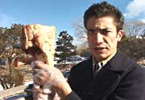
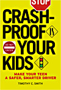
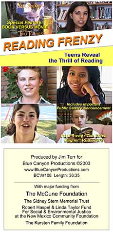

Five vital,
award-winning educational videos on ONE DVD! "FIVE FRIGHTFULLY
FINE VIDEOS"
"Absolutely
extraordinary. I think that there's great stuff in here for
adults.
Teenagers should see this and there's some morality play kind of
things in here,
the consequences of drunk driving, etc., but this is powerful
stuff." -Thom
Hartmann (hear interview below)
"The only acclaim most
educational videos receive are groans and yawns from an
ungrateful audience, but Santa Fe producer Jim Terr has assembled a DVD
of videos on subjects as diverse as driving safety, World
War II and teen reading that's been praised across the
nation." -Santa Fe Reporter
Below
are reviews of the three newest videos on this DVD.
Click on these links to read about the two other acclaimed
videos included in abridged form on this DVD, on World War Two Veterans
(condensed to 39 minutes) and Holocaust Survivors (condensed to 27 minutes).
Finally, a driving safety
video gets
through to teens: "NO BLOODSHED"
The "No Bloodshed" video succeeds
in getting teens to slow down! A PARENT'S
GUIDE
Top Ten Video 2003!!
NO BLOODSHED illustrates
the potential dangers of driving to hard-to-impress
teenagers, by using unusual physics demonstrations,
wry humor,
crash tests and interviews with medical professionals
and victims.
Avoids gory, blood-and-guts images, which reportedly
appeal to some teens and therefore have the opposite
effect.
REVIEWS
NO BLOODSHED: The High
Road to Understanding Driving Danger. Blue Canyon 2002, rel. 2003, 39
min.
Gr. 7-12. Featuring interviews with doctors,
safety experts, and crash victims,
as well as employing driving "experiments" based
on physics (force
and motion), this excellent video (thankfully
containing no graphic accident
footage) introduces safe driving concepts. A
character named "Doofus Clueless" gets
behind the wheel to perform the demonstrations,
which pack a lot of punch. For
example, a raw roasting chicken is skewered on the
end of a pipe and attached
to a car driven at 40 miles per hour. The chicken
hits a metal roadside barrier
and is pulverized.
Other experiments use a coconut and a cow's femur
bone to demonstrate force.
Containing touches of humor, this well edited,
smoothly paced program gets kids'
attention without resorting to sensationalism.
Recommended for both school and
public library collections.
-Debra McLeod, "BOOKLIST"(American
Library Association) June, 2003
_____________________________
School
Library Journal June
2003
Gr 10 Up--Confronting teens with their
own mortality is a daunting task. This production
is sure to catch the rookie driver's attention.
English and Spanish disclaimers warn viewers not
to attempt the demonstrations in the video that
are staged by professionals. The video is narrated
by producer Jim Terr's nephew, Toby Konno, "former
teen." Safety and seat belt usage are stressed.
Medical personnel, traffic safety experts, and
paraplegic crash victims reinforce the need
for-safe driving. What will make an impact on
viewers, however, are the terribly visual and
visceral demonstrations by Ryan Miera playing
Doofus Clueless "crash test dummy come to
life." The remnants of a raw chicken smashed
at 40 mph, the sight of a cow femur shorn in half
by a slow moving vehicle, and the results of a
coconut representing a human skull hit by a
baseball bat will give the audience pause.
. . The segments with Kanno are frank,
straightforward, and terribly compelling. .
. the segments with Doofus Clueless will stay with
viewers long after the production ends. While the
film comes off as a bit quirky, it is compelling
and might just help to save some lives. This fine
effort by Terr would be a good addition to school
and public library collection .
--Mike Brown, Bowie High School, MD
_________________________
"Excellent! The students were captivated
throughout. The information presented was
extremely pertinent and factual. The format was
perfect for teens." -Karen Kaye, Driver's Ed., Del
Norte High School,
Albuquerque, NM _____________________________
NO BLOODSHED: The
High Road to Understanding Driving Danger * *
* (3
stars)(2002) 39 min. Blue Canyon Productions.
Our cars are like little ambulatory rooms: our
own personal environment that moves along with
us. Unfortunately, this sense of being
relatively motionless while driving can create a
false sense of security that masks those
potential and very real dangers that can lead to
an automobile accident.
This straightforward video simply and creatively
illustrates the consequences of failing to be a
vigilant, common-sense driver, and it does so
without the use of gory shock tactics
(demonstrations of car-related bodily harm use a
coconut instead of a head, which may actually be
more of an effective visual for kids who are
already special-effects and stage makeup savvy).
Practical safety tips (locking your doors make
the car more structurally sound in case of a
rollover) are combined with segments featuring
Doofus Clueless, a "crash test dummy come to
life," bringing home the message that not paying
attention and showing off while driving --
common teen errors -- are hazardous to life and
limb....this is a good and affordable
alternative to the overwhelming number of
mediocre shock-and-scare titles in this
category. Recommended. Audience: junior high,
high school, public libraries.
-Erika Gieschen, "VIDEO
LIBRARIAN"May/June, 2003
"Forget
mangled bodies and dry lectures. This video
addresses a very serious issue for teens with
humor, grace, and uncommon intelligence, delivered
in a way that teens will take to heart. As a
parent of two teenagers who drive, I am very
happy someone finally made a video like this. Teens
will love this video. And I have been driving more
carefully since I watched it."
-Victor La Cerva MD, Family
Health Medical Director, NM Dept of Health
(MP3s may be
downloaded in their entirety by radio stations
for use as public service announcements) Please let your favorite radio station know about these
public service announcements
Powerful stuff......we will be putting them in the
rotation. -Warren Bailey, Managing Partner
WKXL-AM / WTPL-FM, Concord / Manchester, NH
For RADIO P.S.A. use:
60-second AUDIO excerpts
Cynthia Jay Brennan, accident victim "When
your car
is squished" Real Audio 56k
Windows Media 56k
(Also available as two 30-sec.
spots below)
Dr. David Sklar,
Director of Emergency Medicine, University of New Mexico
(spot #1 of
2): "Egg
. . . " Real Audio 56k
Windows Media 56k
John McFee,
NM Childhood
Injury Prevention Coordinator "My
niece" Real Audio 56k
Windows Media 56k

Doofus
Clueless, Crash test dummy
come-back-to-life
"Bone crusher"
demonstration Real Audio 56k
Windows Media 56k
(c)
2003 All Rights Reserved.
Unauthorized use or duplication is expressly prohitibed.
GOOD BOOK ON THE SUBJECT -- AND TIM,
THE AUTHOR, IS A GREAT RADIO INTERVIEW:
Click on image 
to go to website
VIDEO 2 OF 5 ON DVD:
READING FRENZY:
Teens Reveal the Thrill of Reading (BCV 108) Length: 361/2 minutes
(This
is one of five videos included on the DVD at top of
page)
Interviews
with teens who read independently, for pleasure, sharing
their enthusiasm for reading in general and their favorite
books in
particular. Designed to excite other teens about this
valuable lifelong
habit, to make reading more appealing and "acceptable."

Includes important public
service announcement about reading
from Rusty "The Chick Magnet" Rutherford.
Booklist
(American Library Assn), July 2004
READING FRENZY
Blue Canyon 2003, released 2004, 37 minutes
An ethnically diverse mix of young
teens with wide-ranging literary tastes sing the
praises of books in this homage to reading.
Starting with one girl's considerations of
poetry by pop singer Jewel and Pablo Neruda, as
well as some of her favorite books including
nonfiction titles, Reviving Ophelia
and Chicken Soup for the Teenage Soul, the
program continues with a succession of
convincingly enthusiastic book lovers talking
about the appeal of works by Mark Twain, Kurt
Vonnegut, Sir Arthur Conan Doyle, Jack London,
Harper Lee, John Grisham and others.
Discussions often revolve around the
reasons books are better than the movie
adaptations. Thanks to an energetic shooting and
editing style (the kids are filmed in outdoor
and indoor settings), the program minimizes a
talking-heads approach. From classics to
contemporary novels, the discussed books clearly
fire the imaginations of young people who
puncture the stereotype that teens have short
attention spans and don't read for pleasure. -Jeff Dick
KIDS' READING
DROPS AT AGE 8: The
older kids get, the less time they devote to reading for
fun, according to a survey released yesterday. The Kids and
Family Reading Report, which tracks kids' opinions, said 44
percent of kids between the ages of 5 to 8 say they read for
fun every day. That drops off to 29 percent by the time a
youngster reaches ages 9 to 11 and by the upper teens -
fuhgeddaboutit. Only 16 percent of youths 15 to 17 say they
read for pleasure every day. The survey, taken by the firm
Yankelovich on behalf of Scholastic Publishers, also said
the No. 1 source for suggesting a good read isn't some
tykster version of Oprah Winfrey, but teachers and
librarians.
VIEW
BRIEF EXCERPT (4:00)
Real Video: 56k
Windows Media 56k
Real Video: DSL/Cable
SIX-MINUTE
MANUFACTURING:
Glimpses of How It's Made (BCV 109)
Length: 341/2 minutes
(This is one of five videos
included on the DVD at top of page)
(Review from Library
Journal, March 2004)
This video will fascinate the curious
with an inside look into the creation of our
high-tech world. The underlying message here
is that although machines make products and
components, people with education in math and
science are ultimately responsible for these
machines. We can all relate to some of the
products shown, including toilet paper, jet
airplanes, and microscope parts. The visits to
eight factories offer a brief "wow," with
machines shooting out materials. Though
professionals offer some explanation of the
various processes, this video is more a
stimulus to encourage students to stay in
school, have a vision, and work to make their
vision possible. Recommended for school and
undergraduate libraries.
-Debbie Rzepczynski, Lake Cty.
P.L., Merrillville, IN
VIEW
BRIEF EXCERPT (4:30)
Real Video: 56k
Windows Media: 56k
Real Video: DSL/Cable
These are the interviews included, to be distributed on one DVD
to San Miguel and
Mora County libraries and schools thanks to Plaza Drugs. (And seeking funding to distribute statewide!)
Important project pending completion
funding - contact
for more information, foundation references, etc...